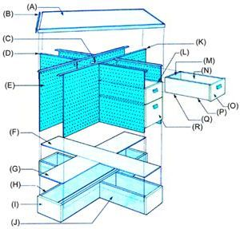

Here's an answer to the nagging problem of combining adequate workspaceand storage:
There's an old adage that goes something like this: "You never know just what tools you'll need until you begin a job." And in most workshops, when that saying proves true, the craftsperson finds him- or herself getting up to search for the required implements. The continual ferrying back and forth of materials and tools that results can mean constant interruptions in concentration, and a, pretty danged cluttered work surface.
Well, the bench pictured here-one or another version of which has been a vital part of several of our research staffers' own home shops for years-is an answer to just such a dilemma. By incorporating large storage areas beneath the tabletop-in the form of drawers and shelved cabinets-and by constructing the sides of the assembly from pegboard (which can be equipped with hooks for hanging up tools), a worker can keep all of the equipment needed for a project close at hand without littering the work area.
Like many of the shop projects that are presented in MOTHER, this bench provides only one among many possible methods of constructing a convenient worktable. And we're sure that many of you will want to incorporate your own bits of inspiration in the design . . . in order to make your bench best suit the kinds of projects you most often tackle.
To provide a very stable working surface, we built the bench's top from a 4' X 8' sheet of 3/4" interior A-B plywood, which we cut in half and sandwiched (using glue plus nails set from the underside) with the grain of the top half at a right angle to that of the bottom layer. The resulting 1-1/2"-thick plank was then fitted with molding made from a 49"-long 1 X 8 board, which we ripped to 1-1/2" widths and mitered at 45° to form the corners of the tabletop.
As you can see in the photos, the base of the workbench is X-shaped. The foot was built by first constructing a rectangular box from two 54-1/4"-long pieces of 1 X 8, with a 12" length of the same dimension wood butted across each end of the assembly. Next, two three-sided frames of 1 X 8 were made . . . each consisting of a pair of 21-1/8" boards with a 12" length across one end. The two smaller structures were then butted-open end in-to the 54-1/4" long box, and secured with three wood screws in each joint. Finally, we closed in the "X" from above by laying appropriately sized sections of 1/4" plywood across the framework and tacking them to the tops of the 1 X 8's.
We used eight 21" X 28-1/2" pieces of pegboard to close in the sides of the bench and support the top. Segments of these dimensions produce a table 36-1/2" high, but you could add to or subtract from the longer dimension of the pegboard to alter the bench's overall height.
Allow the pegboard to overlap the 1 X 8 base by about one inch, and screw the perforated sheets to the wood behind them. For an added measure of security, corner braces should be attached where the pegboard sections meet. A few inches of plumber's tape (metal strap with holes) and a pair of screws for each brace (applied from the inside, of course, so they can't be seen) should suffice.
Because the top is somewhat heftier than the base, we turned the working surface face down on the floor and fastened the base-upside down-to it. To make the connection, two 54" and four 22" lengths of 1 X 2 were first screwed to the underside of the 1-1/2"-thick table . . . in the same X-pattern as the base, but set so that the distance between the outside edges of the cross's arms would be 12 inches. The pegboard could then slide over this frame on the tabletop's underside and be secured, again with wood screws, directly to the 1 X 2's.
Once the table's been flipped back over so that it's right side up, a decision must be made about what kinds of storage units will be needed in the four cavities. We chose to put two small drawers and a large one in one opening, one large drawer and a shelf on the opposite side, and a swing-open door over the third. We left the last side open to accept pieces of lumber. This arrangement, of course, was intended to suit our specific purposes . . . there are lots of other ways to set up the storage areas. But bear in mind, as you plan, that drawers-whose sides will run flush against the inside of the pegboard-will prevent placing any hooks outside those areas. Therefore, if you install too many drawers, you may eliminate the bench's tool-hanging capability!
The drawers themselves are built from "oneby" lumber and 1/4" plywood. To construct each of the smaller ones, you will need two sections of 1/4" X 6-3/8" X 20-1/4" B-B interior plywood (which will form the sides), another piece of the B-B plywood that measures 1/4" X 11-1/4" X 20-1/4" (for the bottom), a 1 X 5-3/8" X 11-1/4" backboard, a 1 X 7-1/4" X 12-1/2" front piece, and two 3/4" X 3/4" X 19-3/4" drawer slides.
Before you begin assembling a drawer, rabbet the inside of the front to a 7/16" depth all around . . . making the cut 5/R" wide along the top, 9/16" wide on both sides, and 1/4" across the bottom. Then slice a 1/4"-wide, 3/8"-deep dado across the inside face of the drawer front . . . 3/4 inch above the 1/4" rabbeted relief. This slot will accommodate the drawer's bottom. Wood screws are used to hold all the pieces together, and a suitable handle can be fashioned from a scrap of 2 X 4.
The assembly of the large drawers follows the same basic plan as that of the smaller ones-the rabbets on the inside of the drawer front are identical-but the dimensions are slightly different: The sides are made from 1/4" X 9-7/8" X 20-1/4" B-B interior plywood, and the bottom is a 1/4" X 11-1/4" X 20-1/4" slab of the same material. The drawer's back is a 1 X 8-7/8" X 11-1/4" board, and its front is 1 X 10-1/2" X 12-1/2".
Dividers should be included as well, to give the drawers secure platforms to slide on. We built a set from half-lapped rectangles-which measure 12" X 19"made from 3/4" X 3/4" stock, covered with 1/4" X 12" X 19" sheets of B-B interior plywood. (If you prefer to have open shelves rather than drawers, the dividers can also serve that purpose.)
The top of our workbench was coated with a heavy layer of polyurethane varnish, to give it a pleasant natural appearance-and to provide waterproofing. We left the color of the pegboard side "as is", however . . . and painted the drawers with a quality latex enamel.
Our research department's bench has already seen hard labor on a number of projects . . . and has managed to survive soldering, filing, and even lunch breaks without suffering damage. What's more, since the table has four convenient sides to work from, it has proved to be a favor ite location for our group brainstorming sessions!
|
 (A) (2) 3/4"" X 4' X 4' A-B PLYWOOD W/GRAIN AT 90? (B) (4) 1 X 1-1/2"" X 49"" MITERED 45? (C) (4) CORNER BRACES (D) (4) 1 X 2 X 22"" (E) (8) 21"" X 28-1/2"" PEGBOARD (F) 1/4"" X 12"" X 55-13/16"" B-B PLYWOOD (G) (2) 1/4"" X 12"" X 21-7/8"" B-B PLYWOOD (H) (2) 1 X 8 X 54-1/4"" (I) (4)1 X 8 X 12"" (J) (4) 1 X 8 X 21-1/8"" (K) (2) 1 X 2 X 54"" (L) 1/4"" X 12"" X 19"" B-B PLYWOOD DIVIDER ON 3/4"" STOCK FRAME (M) 1 x 5-3/8"" x 11-1/4"" BACK (N) (2) 1/4"" X 6-3/8"" X 20-I/4"" B-B PLYWOOD SIDES (O) 1 X 7-1/4"" X 12-1/2"" FRONT (P) (2) 3/4"" X 3/4"" X 19-3/4"" SLIDES (Q) 1/4"" X 11-1/4"" X 20-1/4"" B-B PLYWOOD BOTTOM (R) 9-7/8""-DEEP. 11-1/4""-WIDE, 20-1/4""-LONG DRAWER |
|
|